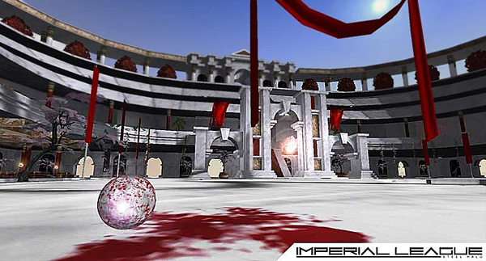

Imperial League
The truce holds, but for how long?
The Imperium turned a blind eye to the Necris invasion. There were accusations in the Imperial Court that the Physiocracy even sanctioned the incursions. And now, civil war on Omicron 6, the Necris homeworld, has ended. No one knows for sure what happened there, but it’s clear the Necris horde is massing at the threshold of the 1000 worlds, and the citizens of the Empire are beginning to worry. The Imperial Courts have been besieged with petitions for aid and protection. All eyes have turned to the Emperor for an answer. And there has been only silence – until now.
The Huristar, legendary holy Guard to the reigning Emperor, vanguards of Imperial insurgency throughout the 1000 worlds, have been mobilised. But not against the Necris.
The Imperium has responded not with military hostilities, but with a more subtle show of force – the Huristar, once kept hidden from the public’s eye, now compete openly against each other in the game of Steel Halo for the glory of the empire. On marble arenas throughout Urivon, homeworld of the Imperial Physiocracy, the Huristar parade their legendary prowess in noble contest, a defiant gesture of the real strength of the Empire. And the citizens love it.
Political opponents have been baffled by the move, labelling it as provocation, a diversion, or even as an outright sign of incompetence against the Necris threat. There are whispers of a Necris plot to infect Huristar with nano-black...dark rumours that disgraced Huristar were harvested by the Necris in the outlawed Commons League, but they somehow rejected the Necris process...
The Imperium’s response has been watched very closely by the Necris, and the Huristar’s, their heads shaped like halos from the hole they bore through their own skulls as a sign of their total devotion, enthral and delight the citizens of the Empire with their zeal, their loyalty, and their might.
For they are Huristar. Holy Guard of the Emperor. Vanguards of Imperial Insurgency.
For them, reality is perfect. All wars are just. Life is the only Law, and Death there only duty. For they are Huristar.
Exclusive - play Imperial League at eGames 2008
Register now (ADD FORUM LINK HERE TO REGISTER THREAD!!!) to compete in the 2v2 competition and be in the running for cool prizes!
PCP will be presenting a demonstration of Imperial League at this years eGames Expo. To [celebrate] the event, PCP will be hosting a 2v2 competition, open to anyone who registers before the event, to be held on Saturday, 15th of November.